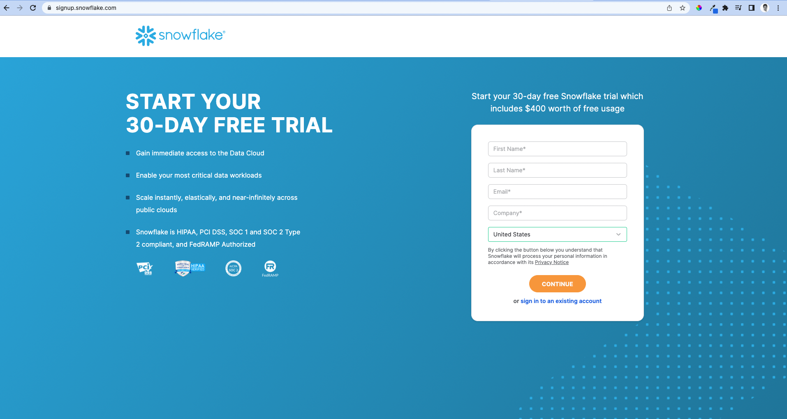
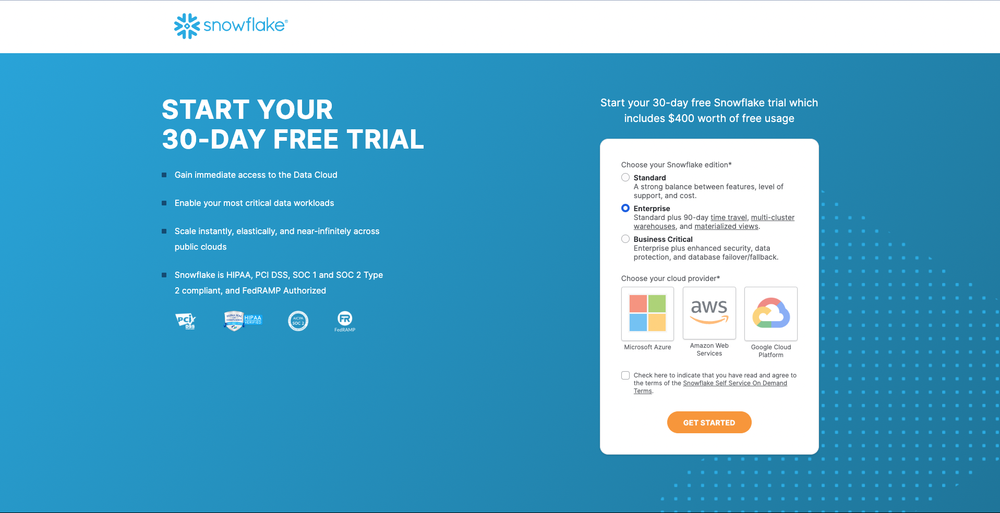
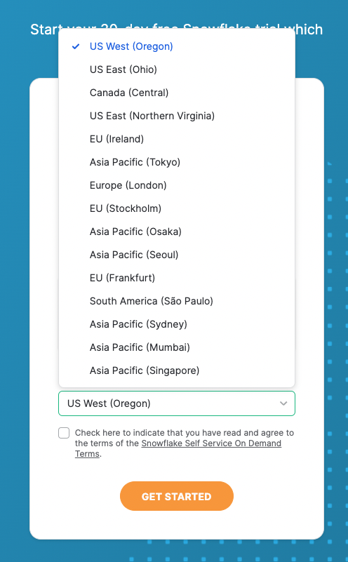
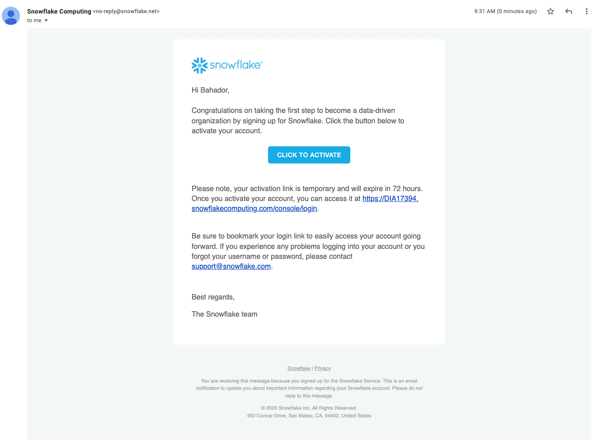
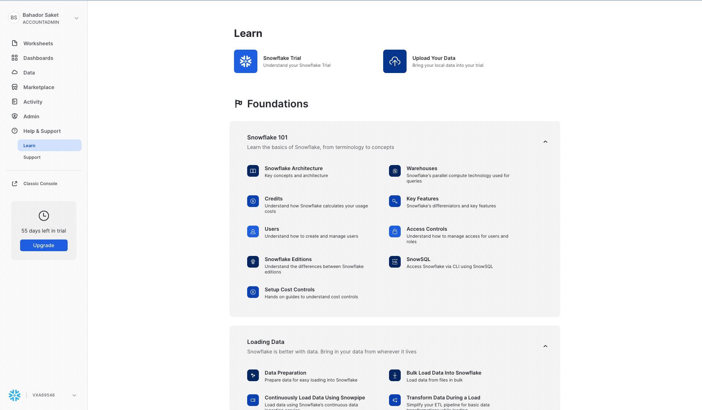
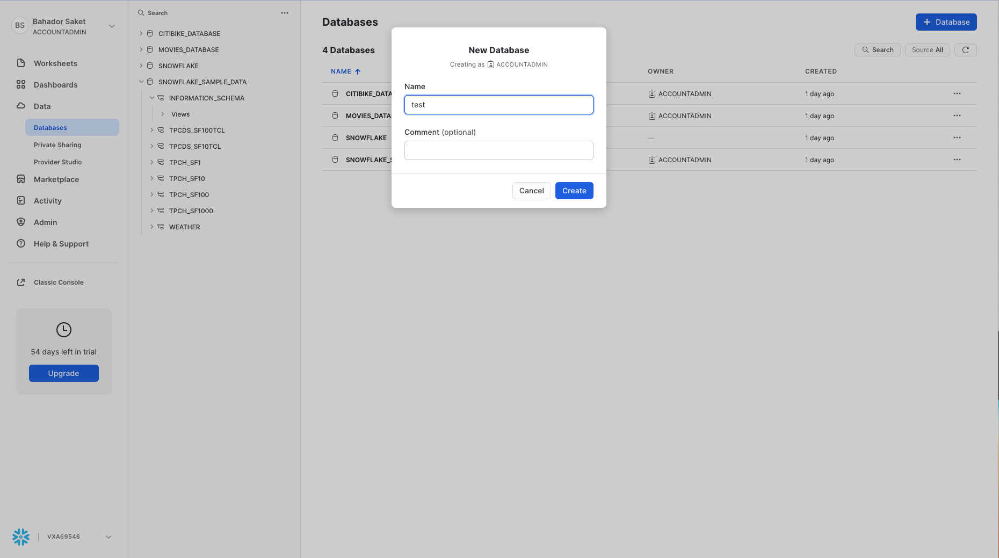

How to Set up a Snowflake Account?¶
In this document, we will walk you through how to create a new Snowflake free trial account.
Step 1: Go to Snowflake sign up page to enter your information (name, email, company name).
{kind=link}
Note
This Snowflake account is available to you for 30 days and it gives you $400 worth of free usage credits. You will have access to your Snowflake free trial account until you exceed your $400 credit limit.
Step 2: The next step Snowflake will ask you to select Snowflake edition (Standard, Enterprise, and Business Critical) and your cloud provider (AWS, GCP, Microsoft Azure).
2-a) Select Enterprise edition
Note
Enterprise edition has all the crucial features except some data security related features (e.g., HIPAA Compliance).
2-b) Select AWS as your cloud partner.
Note
Snowflake can be hosted on AWS, GCP, and Microsoft Azure. Here, we need to choose our cloud partner that our Snowflake will be hosted on.
{kind=link}
Step 3: After selecting AWS as our cloud provided it will ask us to select the region. This list shows a set of regions where Snowflake is offering it service currently. In this case, we selected US West (Oregon), but you can pick any of the available regions.
Note
One very important thing to call out here is that you will not be able to change the selected service provider or region once the account is created. However, you can update your account to any of the account editions.
{kind=link}
Step 4: After creating the account, you should be receiving an email that contains a link to activate your account. Click on “Click to Activate” button to activate your account.
{kind=link}
Step 5: Snowflake will then asks you to set your username and password.
{kind=link}
Step 6: Welcome to your free trial Snowflake account.
{kind=link}
Step 7: Create a new database called “test” in your account.
{kind=link}